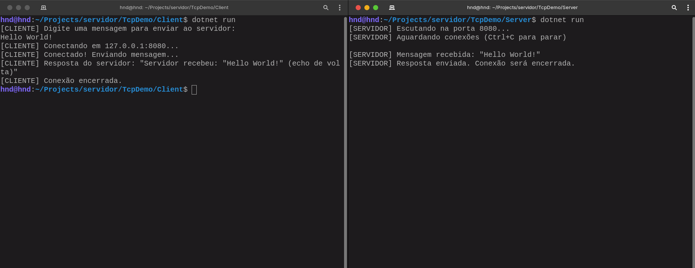

Toda vez que você manda uma mensagem, abre um site ou dá aquele refresh ansioso numa página que devia ter carregado há cinco segundos, tem duas máquinas se falando por trás. Não é mágica, não é nuvem fofa guardando seus dados no céu, é um computador batendo na porta do outro, esperando ser atendido, e uma conversa acontecendo em bytes crus indo e voltando por um cabo, uma antena, um satélite. Eu sempre fui viciado em entender o que tem debaixo do capô, e comunicação entre máquinas é um dos capôs mais bonitos que existem, porque parece invisível até você abrir e ver que é só isso: duas pontas, um protocolo, e uma decisão constante de quem fala e quem escuta.
Para entender isso de verdade, sem depender de uma lib pronta escondendo os detalhes, eu construí o TcpDemo: um servidor e um cliente TCP em C#, do jeito mais cru possível. O servidor escuta uma porta, aceita conexão, lê o que o cliente mandou e devolve um eco. O cliente conecta, manda uma mensagem e espera a resposta. Não tem framework web, não tem rota, não tem JSON bonito, é só TcpListener, TcpClient e um punhado de bytes. E é exatamente por ser tão pequeno que ele deixa aparecer com clareza o que normalmente fica escondido embaixo de uma requisição HTTP, de um WebSocket, de qualquer coisa que a gente chama hoje em dia de "API".
O que é, afinal, cliente e servidor
Antes de entrar em código, vale reduzir a ideia ao osso. Servidor é o programa que fica de prontidão, esperando ser procurado. Ele não sabe quem vai chegar, nem quando, só sabe que precisa estar de ouvido em pé numa porta específica da máquina. Cliente é quem toma a iniciativa: ele sabe o endereço de quem quer falar, bate na porta e espera ser atendido. Essa relação é sempre assimétrica: o servidor espera, o cliente provoca.
É o mesmo modelo de uma central telefônica antiga. A central (servidor) está sempre ligada, sempre disponível, esperando alguém discar. Você (cliente) pega o telefone, disca o número certo, e só depois disso a conversa acontece dos dois lados. Sem o número certo, sem a central ligada, não tem chamada. Essa metáfora não é só bonitinha, ela é literal: uma porta TCP é exatamente isso, um número que identifica qual "ramal" da máquina está esperando ligação.
Onde entra o TCP nessa história
Quando duas aplicações precisam trocar dados pela rede, existe mais de um jeito de fazer isso, e a escolha do protocolo de transporte muda o comportamento inteiro da comunicação. O TCP é orientado a conexão: antes de trocar qualquer dado de verdade, as duas pontas precisam concordar que a conversa vai começar. Ele garante que os bytes cheguem, cheguem na ordem certa e, se algo se perder no caminho, sejam reenviados. Pensa numa transportadora de mudança que numera cada caixa antes de sair (algo como "caixa 4 de 20") e faz você assinar um recibo pra cada uma que chega. Se a caixa 12 não aparecer na van na hora da entrega, ela não te entrega o resto fingindo que está tudo certo: ela volta lá na garagem, busca a caixa 12 de novo, e só desencaixota tudo na sua casa nova depois que a numeração bate, 1 a 20, sem pular nenhuma. É por isso que TCP é a escolha natural quando cada byte importa: enviar um arquivo, carregar uma página, trocar uma mensagem de texto. Ninguém quer abrir um PDF com metade das páginas faltando.
O contraponto é o UDP, que joga o pacote na rede e não fica esperando confirmação de nada. É o equivalente a gritar um número pro seu amigo do outro lado de uma arquibancada lotada, bem na hora do gol: se a torcida ao redor abafar aquele grito específico e ele não ouvir, ninguém vai parar a partida pra você repetir. O jogo já foi pra frente, e gritar de novo o placar de um lance que já passou não faz mais sentido nenhum. Mais rápido, mais leve, mas sem garantia nenhuma. É por isso que jogos online e chamadas de vídeo em tempo real costumam preferir UDP: é melhor perder um frame de vídeo, ou aquele grito específico da arquibancada, do que travar a experiência inteira esperando ele ser reenviado quando o momento já passou.
O TcpDemo, como o nome entrega, escolhe o caminho da confiabilidade: o das caixas numeradas, não o da arquibancada gritada. E essa escolha começa antes mesmo da primeira linha do Program.cs ser executada: ela começa no instante em que ConnectAsync é chamado do lado do cliente, disparando o que a rede chama de three-way handshake. É um custo invisível que toda conexão paga: três viagens de ida e volta só para garantir que os dois lados estão de acordo, prontos e vivos, antes de qualquer "Olá, Servidor!" existir de fato. Quando alguém fala que "abrir muitas conexões novas é caro", é literalmente isso: esse vai-e-vem que precisa acontecer de novo a cada handshake. Dá pra ver esse acordo acontecendo, passo a passo, na simulação abaixo.
Anatomia do TcpDemo
O projeto é dividido em duas pastas, Server/ e Client/, cada uma com seu próprio Program.cs. Não tem banco de dados, não tem autenticação, não tem nada que distraia do que interessa: como dois programas conversam usando só sockets.
TcpDemo/
├── Server/
│ └── Program.cs # escuta a porta 8080 e responde com eco
└── Client/
└── Program.cs # conecta, manda uma mensagem, mostra a resposta
O servidor: ficar escutando não é ficar parado
A primeira decisão do servidor é escolher uma porta. Portas de 0 a 1023 são reservadas pelo sistema operacional para serviços conhecidos (80 para HTTP, 443 para HTTPS, 22 para SSH), então o TcpDemo usa 8080, uma porta alta e livre, comum em exemplos e ambientes de desenvolvimento.
const int Porta = 8080;
TcpListener servidor = new TcpListener(IPAddress.Any, Porta);
servidor.Start();
while (true)
{
TcpClient cliente = await servidor.AcceptTcpClientAsync();
_ = AtenderClienteAsync(cliente);
}
IPAddress.Any diz ao sistema operacional para aceitar conexões chegando por qualquer interface de rede da máquina, não só localhost. E o while (true) não é gambiarra, é a natureza de um servidor: ele não termina sozinho. Ele existe para ficar ali, disponível, até alguém desligar o processo manualmente. É diferente de um script que roda, faz uma coisa e morre. Um servidor é, por definição, um programa que se recusa a acabar.
AcceptTcpClientAsync() é o ponto onde o servidor realmente fica "de ouvido em pé". A execução para ali, sem gastar CPU, até um cliente bater na porta. Quando isso acontece, o handshake das três etapas já rolou nos bastidores do sistema operacional, e o método devolve um TcpClient representando essa conexão específica, já pronta para conversa.
Atender vários clientes ao mesmo tempo
Aqui mora o detalhe que separa um servidor de brinquedo de um servidor de verdade: o _ = AtenderClienteAsync(cliente). Repare que não tem await ali. Isso é proposital e tem nome: fire-and-forget. Pensa num garçom sozinho cuidando de um salão lotado. Se ele atendesse do jeito "bloqueante", anotando o pedido da mesa 1, ficando parado do lado dela esperando o prato sair da cozinha, entregando, esperando o cliente terminar de comer e pedir a conta, e só então indo até a mesa 2, o salão inteiro andaria na velocidade da mesa mais lenta, e quem chegasse depois ficaria plantado na porta esperando a vez, mesmo sem ninguém ter ido atendê-lo ainda. É exatamente isso que await AtenderClienteAsync(cliente) faria aqui: o loop ficaria preso atendendo um cliente inteiro (ler, decodificar, responder, fechar) antes de voltar para o AcceptTcpClientAsync() e aceitar o próximo. Um cliente lento (ou só uma rede ruim) travaria a fila inteira atrás dele.
Disparando a tarefa e não esperando por ela, o loop volta imediatamente para aceitar a próxima conexão, enquanto AtenderClienteAsync roda em paralelo cuidando do cliente anterior. É o garçom que anota o pedido da mesa 1, avisa a cozinha e já está virando pra mesa 2 antes do prato da mesa 1 sequer começar a fritar. Ele não fica parado olhando pro fogão: quem realmente "espera" a comida ficar pronta é a cozinha, e ela só chama o garçom de volta quando o prato sai. É esse pulo do gato que permite um único processo atender dezenas de clientes "ao mesmo tempo" sem abrir uma thread manual para cada um. Não é que existam vinte garçons escondidos ali atrás: nenhum deles fica parado esperando à toa. O runtime do .NET usa thread pool e I/O assíncrono por trás do async/await para isso: enquanto uma conexão está parada esperando dados chegarem pela rede, ela não ocupa uma thread inteira travada: a thread fica livre para fazer outra coisa até os dados chegarem de fato.
O cliente: conectar, falar, ouvir, desligar
Do outro lado da conversa, o cliente segue uma receita bem mais linear, porque ele não precisa esperar ninguém: ele age.
using TcpClient cliente = new TcpClient();
await cliente.ConnectAsync(EnderecoServidor, Porta);
using (NetworkStream stream = cliente.GetStream())
{
byte[] bytesMensagem = Encoding.UTF8.GetBytes(mensagem);
await stream.WriteAsync(bytesMensagem, 0, bytesMensagem.Length);
byte[] buffer = new byte[1024];
int bytesLidos = await stream.ReadAsync(buffer, 0, buffer.Length);
string respostaServidor = Encoding.UTF8.GetString(buffer, 0, bytesLidos);
}
ConnectAsync é a linha que dispara o handshake da figura anterior. Só depois que ela retorna com sucesso é que existe, de fato, uma conexão TCP estabelecida entre as duas máquinas. Antes disso, não tem "cano" nenhum aberto, só uma intenção. Uma vez conectado, tanto cliente quanto servidor enxergam a mesma abstração para trocar dados: o NetworkStream. É literalmente um cano: você escreve bytes numa ponta com WriteAsync, e a outra ponta lê com ReadAsync. Não existe conceito de "requisição" nem "resposta" no TCP puro: isso é uma convenção que a aplicação decide impor por cima do protocolo, e é exatamente o que o TcpDemo faz manualmente: cliente escreve, servidor lê; servidor escreve, cliente lê.
Bytes, não strings: o que realmente viaja pela rede
Esse é o ponto que eu acho mais bonito do projeto inteiro, porque ele expõe uma verdade que fica escondida atrás de qualquer biblioteca HTTP moderna: a rede não transporta texto, transporta bytes. Quando você escreve string mensagem = "Olá, Servidor!", isso só existe como texto legível dentro da memória do seu programa. Para sair pelo cano da rede, precisa virar uma sequência de números de 0 a 255, e é isso que Encoding.UTF8.GetBytes(mensagem) faz: traduz cada caractere para sua representação binária usando a tabela UTF-8. Do outro lado, Encoding.UTF8.GetString(buffer, 0, bytesLidos) faz o caminho inverso. Se as duas pontas não combinarem a mesma codificação, o que chega do outro lado vira lixo: caracteres estranhos, acentos quebrados, aquele clássico "é" no lugar de "é" que todo mundo já viu em algum sistema mal configurado.
Tem outro detalhe sutil escondido no ReadAsync que costuma pegar gente de surpresa: ele devolve quantos bytes efetivamente chegaram, não necessariamente uma mensagem inteira. TCP é um protocolo de stream de bytes, não de mensagens. Pro TCP, tudo que um lado escreve é só mais um pedaço de uma fita contínua, e ele não sabe nem se importa onde uma mensagem termina e a próxima começa.
Imagina que o cliente manda "OI" e, logo em seguida, "TUDO". Nada garante que o servidor vai receber isso em duas leituras separadas: pode chegar tudo junto numa leitura só, "OITUDO", sem espaço, vírgula ou qualquer marca dizendo onde uma mensagem acaba e a outra começa. Só olhando pra essa sequência de letras, dá pra cortar em vários lugares diferentes, e a maioria produz um resultado sem nexo nenhum. Tenta você mesmo aqui embaixo.
Para uma mensagem curta rodando em localhost, essa mistura quase nunca aparece na prática, mas o problema é real e tem nome: framing. É o motivo pelo qual protocolos de verdade, como o próprio HTTP, precisam de uma regra combinada entre as duas pontas pra saber onde uma mensagem acaba: normalmente informando o tamanho dela logo no início, como no experimento acima, ou usando um delimitador conhecido pra marcar o fim. Sem essa combinação, o servidor não tem como saber, de forma confiável, quando parar de ler.
Erros que não podem ficar invisíveis
Como AtenderClienteAsync roda em fire-and-forget, ninguém está esperando o resultado dela, e isso é perigoso. Se uma exceção estourasse ali dentro sem tratamento, ela simplesmente desapareceria: nenhuma linha no console, nenhum crash, nada. O servidor pareceria "não fazer nada" para aquele cliente específico, sem pista nenhuma do porquê. É para isso que existe o try/catch envolvendo o corpo inteiro do método, capturando qualquer Exception e imprimindo o tipo e a mensagem do erro. Não é sobre esperar que o erro nunca aconteça (cliente que cai no meio da conversa, timeout, conexão resetada, tudo isso é absolutamente normal numa rede real): é sobre garantir que, quando acontecer, alguém consiga ver e diagnosticar.
Rodando de verdade
Em dois terminais separados, na raiz do projeto:
# Terminal 1: servidor
dotnet run --project Server
# Terminal 2: cliente
dotnet run --project Client
O servidor sobe e fica esperando em silêncio. O cliente conecta em 127.0.0.1:8080, pede uma mensagem digitada, manda pela rede e mostra o eco assim que ele volta. Rode o cliente de novo, de outro terminal, enquanto o primeiro ainda está de pé, e vai funcionar igual, porque o servidor não trava esperando ninguém: ele só dispara e volta a escutar.

Os limites desse exemplo (e o que vem depois na vida real)
O TcpDemo é deliberadamente cru, e é isso que faz ele valer a pena como exercício, mas vale nomear onde ele para para não passar a impressão de que "é só isso" que sustenta a internet.
- Sem criptografia. Tudo que passa por esse socket viaja em texto puro. Qualquer um capturando o tráfego da rede lê a mensagem sem esforço nenhum. É exatamente o problema que o TLS resolve por cima do TCP: ele intercala mais uma negociação (o TLS handshake) logo depois do handshake TCP, trocando chaves e certificados antes de qualquer dado de aplicação trafegar. HTTPS nada mais é do que HTTP rodando dentro dessa camada extra de criptografia.
- Sem framing de mensagens. Como já vimos, uma troca curta em
localhostesconde o problema, mas um protocolo sério como o HTTP precisa resolver isso explicitamente: ele delimita o fim dos headers com uma linha em branco (\r\n\r\n) e usaContent-Lengthpara saber o tamanho exato do corpo. - Uma mensagem, uma conexão. Aqui o cliente conecta, manda uma mensagem, recebe a resposta e fecha. HTTP/1.1 já trouxe conexões persistentes (keep-alive) para evitar pagar o custo do handshake a cada requisição, e WebSocket leva isso ainda mais longe: depois de um único handshake inicial (que começa, aliás, como uma requisição HTTP comum), a mesma conexão TCP fica aberta trocando mensagens nos dois sentidos livremente, sem precisar reconectar.
E é aqui que a ficha cai de um jeito meio satisfatório: toda essa infraestrutura que a gente usa todo dia sem pensar (abrir um site, chamar uma API REST, manter um chat em tempo real) é, lá no fundo, a mesma coisa que está acontecendo dentro do TcpDemo. TcpListener escutando uma porta. TcpClient conectando. Bytes indo e voltando por um NetworkStream. O que muda de um caso para o outro são as camadas de convenção e segurança empilhadas por cima: um formato de mensagem combinado, uma criptografia, uma forma de manter a conexão viva. O socket cru continua lá embaixo, fazendo o trabalho pesado que ninguém vê.
Conclusão
O TcpDemo é pequeno de propósito, mas cobre o essencial da mecânica que normalmente fica escondida atrás de um HttpClient, de uma API REST ou de um WebSocket: a conexão só existe depois do handshake, os dados trafegam como bytes crus, a ordem e os limites de cada mensagem não são garantidos sem framing, e nada disso funciona direito sem tratamento de erro e fechamento de conexão. Escrever essa parte na mão, em vez de delegar pra uma biblioteca pronta, deixa claro que uma abstração como HttpClient não elimina esses problemas. Ela só resolve cada um deles de um jeito específico e esconde a decisão atrás de um método com nome bonito.
Nada disso é exclusivo do TCP cru. Toda vez que duas aplicações trocam dados pela rede, alguém decidiu como estabelecer a conexão, como delimitar mensagens, como lidar com perda e reordenação, e como reportar falha. HTTP, gRPC e WebSocket resolvem essas mesmas questões de formas diferentes, em cima da mesma base de sockets que aparece nesses dois Program.cs de quarenta e poucas linhas cada. Entender o TcpDemo não substitui usar essas ferramentas prontas no dia a dia, mas tira a sensação de estar operando uma caixa preta: existe uma escolha, um trade-off e um motivo técnico por trás de cada camada empilhada em cima do TCP.